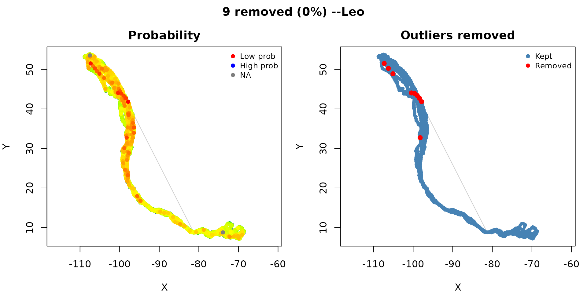

Migratory satellite tracking: Leo the Turkey Vulture
Source:vignettes/OUTLIER_example_leo_migration.Rmd
OUTLIER_example_leo_migration.RmdThis vignette cleans a real satellite track end to end: Leo, a migratory Turkey Vulture (Cathartes aura) followed from Canada to Venezuela. The data look nothing like high-frequency GPS. Fixes arrive about three times a day but very unevenly, the track spans a continent, and the step lengths swing enormously between migration and the long stationary spells on the wintering and breeding grounds. Those features are exactly what trips up a naive outlier check, so Leo is a good test of cleaning that respects how much time passed between locations.
Load data
Leo’s track (2007–2013) is bundled with the package. We drop empty geometries first, as always.
library(move2)
library(sf)
library(move2utils)
Leo <- mt_read(system.file("extdata", "Leo-65545.csv.gz",
package = "move2utils"))
Leo <- Leo[!st_is_empty(Leo), ]
cat(nrow(Leo), "locations over",
round(as.numeric(diff(range(mt_time(Leo))), units = "days")),
"days\n")
#> 35256 locations over 2102 days
## time lag distribution
tl <- as.numeric(diff(mt_time(Leo)), units = "hours")
cat("Time lags: median", round(median(tl), 1), "h,",
"range", round(min(tl), 1), "--", round(max(tl), 1), "h\n")
#> Time lags: median 1 h, range 1 -- 9253 hThe gaps between fixes run from about an hour to months (the tag off, or the bird sitting out the winter). With timing this irregular, the cleaner has to account for elapsed time, or it will mistake a long migratory leg for an error.
Why elapsed time matters
If you ignore how much time passed between two locations, a 500 km
migratory step looks impossibly far compared with a day of local
foraging, and the unusual-movement check
(mt_flag_outliers()) flags it. Turn on
time_normalize and the same step becomes a moderate speed —
a vulture covering 500 km in three days is entirely normal. The
comparison makes the point:
r_tn <- mt_flag_outliers(Leo, time_normalize = TRUE, plot = FALSE)
#> Input is in longitude/latitude. Auto-projecting to a local AEQD for Euclidean prob math; output is returned in the original CRS.
#> Calculating movement metrics...
#> ACF-derived alpha: 0.263 (r_speed=0.822, r_angvel=0.084)
#> Calculating probability distributions...
#> Note: gap-aware scaling is NOT in force for the step auto-difference (gap distribution yields only 2 distinct quantile break(s); need 3 (a strictly two-valued duty cycle can land here depending on its mixing proportion));
#> the scale is constant, so autodifferences are not gap-normalised.
#> Note: gap-aware scaling is NOT in force for the turning-angle auto-difference (gap distribution yields only 2 distinct quantile break(s); need 3 (a strictly two-valued duty cycle can land here depending on its mixing proportion));
#> the scale is constant, so autodifferences are not gap-normalised.
#> Calculating joint probabilities...
#> Identifying outliers...
#>
#> 3 locations (0.0%) have NA probabilities (includes 7001 stationary fixes) --will be kept.
#> === 9 outliers (0.03% of 35256) ===
r_raw <- mt_flag_outliers(Leo, time_normalize = FALSE, plot = FALSE)
#> Input is in longitude/latitude. Auto-projecting to a local AEQD for Euclidean prob math; output is returned in the original CRS.
#> Calculating movement metrics...
#> ACF-derived alpha: 0.095 (r_speed=0.110, r_angvel=0.083)
#> Calculating probability distributions...
#> Note: gap-aware scaling is NOT in force for the step auto-difference (gap distribution yields only 1 distinct quantile break(s); need 3 (a strictly two-valued duty cycle can land here depending on its mixing proportion));
#> the scale is constant, so autodifferences are not gap-normalised.
#> Note: gap-aware scaling is NOT in force for the turning-angle auto-difference (gap distribution yields only 1 distinct quantile break(s); need 3 (a strictly two-valued duty cycle can land here depending on its mixing proportion));
#> the scale is constant, so autodifferences are not gap-normalised.
#> Note: step-length range/IQR = 1740 is extreme;
#> teleport-class GPS errors are better handled by
#> mt_filter_gps_quality() (drop fixes with <5 satellites)
#> and mt_flag_outliers_bridge() (geometric, leverage-immune).
#> step_transform = "log" is available but can hide
#> physiologically-plausible joint turn/step outliers.
#> Calculating joint probabilities...
#> Identifying outliers...
#>
#> 3 locations (0.0%) have NA probabilities (includes 7001 stationary fixes) --will be kept.
#> === 267 outliers (0.76% of 35256) ===
cat("With elapsed-time normalisation: ", sum(r_tn$is_outlier), "outliers\n")
#> With elapsed-time normalisation: 9 outliers
cat("Without elapsed-time normalisation:", sum(r_raw$is_outlier), "outliers\n")
#> Without elapsed-time normalisation: 267 outliersAlmost all of the extra “outliers” in the second run are false
alarms: ordinary migratory movements that only look extreme because the
raw step length ignores the days that elapsed. This is why
time_normalize = TRUE is the sensible choice for irregular
data.
Default detection
result <- mt_flag_outliers(Leo)
#> Input is in longitude/latitude. Auto-projecting to a local AEQD for Euclidean prob math; output is returned in the original CRS.
#> Calculating movement metrics...
#> ACF-derived alpha: 0.263 (r_speed=0.822, r_angvel=0.084)
#> Calculating probability distributions...
#> Note: gap-aware scaling is NOT in force for the step auto-difference (gap distribution yields only 2 distinct quantile break(s); need 3 (a strictly two-valued duty cycle can land here depending on its mixing proportion));
#> the scale is constant, so autodifferences are not gap-normalised.
#> Note: gap-aware scaling is NOT in force for the turning-angle auto-difference (gap distribution yields only 2 distinct quantile break(s); need 3 (a strictly two-valued duty cycle can land here depending on its mixing proportion));
#> the scale is constant, so autodifferences are not gap-normalised.
#> Calculating joint probabilities...
#> Identifying outliers...
#>
#> 3 locations (0.0%) have NA probabilities (includes 7001 stationary fixes) --will be kept.
#> === 9 outliers (0.03% of 35256) ===
#> Creating diagnostic plot...
With elapsed-time normalisation and the default gap-based threshold, Leo’s track shows very few or no outliers. A soaring bird tracked by satellite is naturally more variable than a mammal tracked by high-frequency GPS, and the gap threshold reads that wide spread as the normal distribution rather than chopping off its tails.
The one-call workflow — mt_clean_track()
For routine cleaning, mt_clean_track() runs all four
checks — path position (mt_flag_outliers_bridge),
there-and-back spikes (mt_flag_outliers_detour), unusual
movement (mt_flag_outliers), and speed
(mt_flag_speed_cap) — under one iterative call and combines
them into a single decision. By default it weighs how strongly each
check distrusts a location on a common scale and flags the location when
the combined evidence is positive and either two checks
agree or the there-and-back check alone is overwhelmingly sure
(consensus = "evidence_corroborated"). You can switch rules
via consensus =: the earlier behaviour is
"class_aware", and "strict",
"majority", "speed_trusted",
"weighted_evidence", "any" and
"custom" are also available (see
?mt_flag_consensus).
Turkey vultures sustain flight speeds around 25 m/s. Supplying that
as a physiological cap (v_max = 25) lets the speed check
peel any spoof- or teleport-type clusters at their edges before the
other checks run on what survives.
clean <- mt_clean_track(Leo, v_max = 25, plot = FALSE)
#> Speed peel (pre-step) at v_max = 25 m/s: 4 fix(es) removed in 1 iteration(s).
#> Iter 1: bridge=13447 prob=11 speed=0 detour=3127 (v_max=25.0) | conjunction=438 | new=438 cumulative=442
#> Iter 2: bridge=10235 prob=35 speed=0 detour=2687 (v_max=25.0) | conjunction=59 | new=59 cumulative=501
#> Iter 3: bridge=10172 prob=20 speed=0 detour=2661 (v_max=25.0) | conjunction=19 | new=19 cumulative=520
#> Iter 4: bridge=10159 prob=22 speed=0 detour=2658 (v_max=25.0) | conjunction=14 | new=14 cumulative=534
#> Iter 5: bridge=10152 prob=13 speed=0 detour=2656 (v_max=25.0) | conjunction=7 | new=7 cumulative=541
#> Iter 6: bridge=10166 prob=6 speed=0 detour=2656 (v_max=25.0) | conjunction=4 | new=4 cumulative=545
#> Iter 7: bridge=10161 prob=11 speed=0 detour=2656 (v_max=25.0) | conjunction=7 | new=7 cumulative=552
#> Iter 8: bridge=10162 prob=12 speed=0 detour=2656 (v_max=25.0) | conjunction=6 | new=6 cumulative=558
#> Iter 9: bridge=10138 prob=15 speed=0 detour=2656 (v_max=25.0) | conjunction=12 | new=12 cumulative=570
#> Iter 10: bridge=10134 prob=17 speed=0 detour=2656 (v_max=25.0) | conjunction=12 | new=12 cumulative=582
#> Iter 11: bridge=10155 prob=25 speed=0 detour=2656 (v_max=25.0) | conjunction=18 | new=18 cumulative=600
#> Iter 12: bridge=10139 prob=40 speed=0 detour=2656 (v_max=25.0) | conjunction=33 | new=33 cumulative=633
#> Iter 13: bridge=10071 prob=40 speed=0 detour=2656 (v_max=25.0) | conjunction=33 | new=33 cumulative=666
#> Iter 14: bridge=10085 prob=15 speed=0 detour=2656 (v_max=25.0) | conjunction=14 | new=14 cumulative=680
#> Iter 15: bridge=10080 prob=18 speed=0 detour=2655 (v_max=25.0) | conjunction=10 | new=10 cumulative=690
#> Iter 16: bridge=10076 prob=26 speed=0 detour=2655 (v_max=25.0) | conjunction=21 | new=21 cumulative=711
#> Iter 17: bridge=10059 prob=19 speed=0 detour=2655 (v_max=25.0) | conjunction=14 | new=14 cumulative=725
#> Iter 18: bridge=10056 prob=13 speed=0 detour=2655 (v_max=25.0) | conjunction=12 | new=12 cumulative=737
#> Iter 19: bridge=10064 prob=41 speed=0 detour=2654 (v_max=25.0) | conjunction=31 | new=31 cumulative=768
#> Iter 20: bridge=10058 prob=13 speed=0 detour=2654 (v_max=25.0) | conjunction=13 | new=13 cumulative=781
#> Iter 21: bridge=10050 prob=25 speed=0 detour=2652 (v_max=25.0) | conjunction=20 | new=20 cumulative=801
#> Iter 22: bridge=10034 prob=22 speed=0 detour=2651 (v_max=25.0) | conjunction=20 | new=20 cumulative=821
#> Iter 23: bridge=10028 prob=14 speed=0 detour=2648 (v_max=25.0) | conjunction=13 | new=13 cumulative=834
#> Iter 24: bridge=10023 prob=17 speed=0 detour=2647 (v_max=25.0) | conjunction=13 | new=13 cumulative=847
#> Iter 25: bridge=10023 prob=30 speed=0 detour=2647 (v_max=25.0) | conjunction=29 | new=29 cumulative=876
#> Iter 26: bridge=9976 prob=30 speed=0 detour=2645 (v_max=25.0) | conjunction=26 | new=26 cumulative=902
#> Iter 27: bridge=9966 prob=18 speed=0 detour=2644 (v_max=25.0) | conjunction=17 | new=17 cumulative=919
#> Iter 28: bridge=9950 prob=18 speed=0 detour=2643 (v_max=25.0) | conjunction=15 | new=15 cumulative=934
#> Iter 29: bridge=9938 prob=12 speed=0 detour=2643 (v_max=25.0) | conjunction=11 | new=11 cumulative=945
#> Iter 30: bridge=9959 prob=22 speed=0 detour=2643 (v_max=25.0) | conjunction=19 | new=19 cumulative=964
#> Iter 31: bridge=9940 prob=9 speed=0 detour=2643 (v_max=25.0) | conjunction=9 | new=9 cumulative=973
#> Iter 32: bridge=9935 prob=7 speed=0 detour=2642 (v_max=25.0) | conjunction=6 | new=6 cumulative=979
#> Iter 33: bridge=9921 prob=10 speed=0 detour=2642 (v_max=25.0) | conjunction=6 | new=6 cumulative=985
#> Iter 34: bridge=9922 prob=22 speed=0 detour=2642 (v_max=25.0) | conjunction=19 | new=19 cumulative=1004
#> Iter 35: bridge=9915 prob=15 speed=0 detour=2642 (v_max=25.0) | conjunction=14 | new=14 cumulative=1018
#> Iter 36: bridge=9914 prob=20 speed=0 detour=2641 (v_max=25.0) | conjunction=16 | new=16 cumulative=1034
#> Iter 37: bridge=9879 prob=23 speed=0 detour=2641 (v_max=25.0) | conjunction=19 | new=19 cumulative=1053
#> Iter 38: bridge=9892 prob=12 speed=0 detour=2641 (v_max=25.0) | conjunction=10 | new=10 cumulative=1063
#> Iter 39: bridge=9829 prob=30 speed=0 detour=2640 (v_max=25.0) | conjunction=24 | new=24 cumulative=1087
#> Iter 40: bridge=9843 prob=25 speed=0 detour=2639 (v_max=25.0) | conjunction=24 | new=24 cumulative=1111
#> Iter 41: bridge=9887 prob=3 speed=0 detour=2635 (v_max=25.0) | conjunction=4 | new=4 cumulative=1115
#> Iter 42: bridge=9828 prob=10 speed=0 detour=2632 (v_max=25.0) | conjunction=7 | new=7 cumulative=1122
#> Iter 43: bridge=9825 prob=10 speed=0 detour=2632 (v_max=25.0) | conjunction=9 | new=9 cumulative=1131
#> Iter 44: bridge=9824 prob=11 speed=0 detour=2632 (v_max=25.0) | conjunction=6 | new=6 cumulative=1137
#> Iter 45: bridge=9820 prob=7 speed=0 detour=2632 (v_max=25.0) | conjunction=6 | new=6 cumulative=1143
#> Iter 46: bridge=9815 prob=24 speed=0 detour=2632 (v_max=25.0) | conjunction=21 | new=21 cumulative=1164
#> Iter 47: bridge=9849 prob=28 speed=0 detour=2633 (v_max=25.0) | conjunction=24 | new=24 cumulative=1188
#> Iter 48: bridge=11089 prob=11 speed=0 detour=2630 (v_max=25.0) | conjunction=10 | new=10 cumulative=1198
#> Iter 49: bridge=11087 prob=4 speed=0 detour=2627 (v_max=25.0) | conjunction=4 | new=4 cumulative=1202
#> Iter 50: bridge=11085 prob=5 speed=0 detour=2625 (v_max=25.0) | conjunction=4 | new=4 cumulative=1206
#> Iter 51: bridge=11083 prob=3 speed=0 detour=2624 (v_max=25.0) | conjunction=1 | new=1 cumulative=1207
#> Iter 52: bridge=11083 prob=2 speed=0 detour=2624 (v_max=25.0) | conjunction=0 | new=0 cumulative=1207
#> Block-expansion gate: DECLINED -- largest component holds only 10.2% of kept fixes (< 80% required) -- cut severs continuous trajectory.
#> === mt_clean_track: 1207 flagged (3.424% of 35256); stopped: no_new_flags ===
#> Returning the cleaned track (34049 rows). To inspect what was flagged, re-run with remove = FALSE.
cat("kept", nrow(clean), "of", nrow(Leo), "fixes\n")
#> kept 34049 of 35256 fixesFor long, irregular satellite tracks where you have no known top
speed, leave the cap at its data-driven default
(v_max = NULL) — that is the safe call.
Whichever consensus rule you use, mt_clean_track() still
records why each location was flagged. The
error_class column names the rule that caught it (a clear
there-and-back spike, an impossible speed, membership of a removed
block, and so on); it is computed regardless of the consensus rule. To
see the full evidence weighed on a common scale — the
combined_evidence column — run the standalone
mt_flag_consensus(mode = "evidence_corroborated") or
mt_flag_consensus(mode = "weighted_evidence") on a flagged
track.
Auto-optimised alpha
The unusual-movement check blends each step with the change in step
from one move to the next; alpha sets how much that change
counts. For Leo’s irregular data, how much should it count? Let
the optimiser decide:
r_auto <- mt_flag_outliers(Leo, autodiff_alpha = "auto", plot = FALSE)
#> Input is in longitude/latitude. Auto-projecting to a local AEQD for Euclidean prob math; output is returned in the original CRS.
#> Calculating movement metrics...
#> Calculating probability distributions...
#> Note: gap-aware scaling is NOT in force for the step auto-difference (gap distribution yields only 2 distinct quantile break(s); need 3 (a strictly two-valued duty cycle can land here depending on its mixing proportion));
#> the scale is constant, so autodifferences are not gap-normalised.
#> Note: gap-aware scaling is NOT in force for the turning-angle auto-difference (gap distribution yields only 2 distinct quantile break(s); need 3 (a strictly two-valued duty cycle can land here depending on its mixing proportion));
#> the scale is constant, so autodifferences are not gap-normalised.
#> Auto-optimised alpha: 2.0000
#> Calculating joint probabilities...
#> Identifying outliers...
#>
#> 3 locations (0.0%) have NA probabilities (includes 7001 stationary fixes) --will be kept.
#> === 25 outliers (0.07% of 35256) ===
cat("Outliers with auto-alpha:", sum(r_auto$is_outlier), "\n")
#> Outliers with auto-alpha: 25Comparison with a regular-sampling track
The contrast with regular, high-frequency sampling is instructive.
The bundled CPF_A synthetic track (also used in vignettes
1, 3, 4 and 5) has regular sampling and 23 errors planted at known
positions. There the check finds genuine errors that stand out clearly
against an otherwise tight distribution:
path <- system.file("extdata/synthetic_tracks.csv.gz",
package = "move2utils")
tracks <- mt_read(path)
cpf_a <- filter_track_data(tracks, .track_id = "CPF_A")
r_cpf <- mt_flag_outliers(cpf_a, plot = FALSE)
#> Input is in longitude/latitude. Auto-projecting to a local AEQD for Euclidean prob math; output is returned in the original CRS.
#> Calculating movement metrics...
#> ACF-derived alpha: 0.139 (r_speed=0.817, r_angvel=0.024)
#> Calculating probability distributions...
#> Note: step-length range/IQR = 8233 is extreme;
#> teleport-class GPS errors are better handled by
#> mt_filter_gps_quality() (drop fixes with <5 satellites)
#> and mt_flag_outliers_bridge() (geometric, leverage-immune).
#> step_transform = "log" is available but can hide
#> physiologically-plausible joint turn/step outliers.
#> Calculating joint probabilities...
#> Identifying outliers...
#>
#> 3 locations (0.2%) have NA probabilities --will be kept.
#> === 5 outliers (0.29% of 1748) ===
cat("CPF_A (regular sampling, 23 planted outliers):",
sum(r_cpf$is_outlier), "flagged of", nrow(cpf_a), "fixes\n")
#> CPF_A (regular sampling, 23 planted outliers): 5 flagged of 1748 fixes
cat("Leo (vulture, satellite):",
sum(result$is_outlier), "flagged of", nrow(Leo), "fixes\n")
#> Leo (vulture, satellite): 9 flagged of 35256 fixesThe check adapts to the data. Regular high-frequency sampling gives a tight distribution where planted errors jump out; irregular satellite data has wide natural variability that the gap threshold respects rather than punishes.
Multi-scale persistence annotation
mt_persistence_score() takes any flagged output and adds
a confidence score: at each of scales = c(2, 4, 8) (the
validation scales) it asks whether a flagged location still looks
anomalous when viewed over a wider time window. Scores run from 1
(flagged only at the native resolution) to 4 (flagged at every scale).
It does not touch is_outlier — it only annotates.
annotated <- mt_persistence_score(result, silent = TRUE)
flagged <- which(annotated$is_outlier)
cat("Persistence score distribution among flagged fixes:\n")
#> Persistence score distribution among flagged fixes:
print(table(annotated$persistence_count[flagged]))
#>
#> 4
#> 9See
vignette("OUTLIER_5_persistence_score", package = "move2utils")
for the empirical class-conditional analysis on synthetic CPF data.
Further reading
-
vignette("OUTLIER_1_getting_started", package = "move2utils")— the unifiedmt_clean_track()workflow and a brief tour of all four checks. -
vignette("OUTLIER_2_diagnose_clean_track", package = "move2utils")— the after-cleaning health check. -
vignette("OUTLIER_3_state_conditional", package = "move2utils")— cleaning different behaviours separately, the recipe to reach for when the diagnostic flags two behavioural states. -
vignette("OUTLIER_4_outlier_bridge", package = "move2utils")— the path-position check and the kinds of error its directional variant distinguishes; for fine control over a single check. -
vignette("OUTLIER_5_persistence_score", package = "move2utils")— scoring how confident each flag is; useful as a post-cleaning filter. -
vignette("OUTLIER_heterogeneous_error_regimes", package = "move2utils")— tracks mixing sensors with different error, cleaned one sensor at a time. -
vignette("OUTLIER_example_outlier_whitestork", package = "move2utils")— a full narrated cleaning on a real high-frequency stork track.